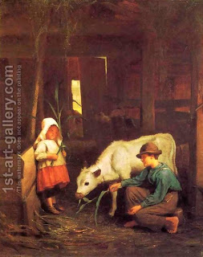

Chullin 76 - Injuries to the Hind Leg
If an animal's hind leg was severed below the joint, it is still fit for consumption, but if it was severed above the joint, then it is unfit, because it has been rendered terefah . The animal's hind leg has two joins, so which one are we talking about? There are different opinions on that, and also different reported versions of these opinions.
A "junction of sinews" are the three sinews that attach the middle leg muscles to the bone of the lower leg. If they are removed, the animal becomes a terefah.
If a bone was fractured and the broken ends pierced the skin, the animal remains kosher, but the limb itself is in question. If the greater part of the flesh remains, the shechitah of the animal makes the limb fit for consumption, but if not, then this is a dangling limb, and it is forbidden for consumption.
Art: George Cochran Lamdin - The Little White Heifer